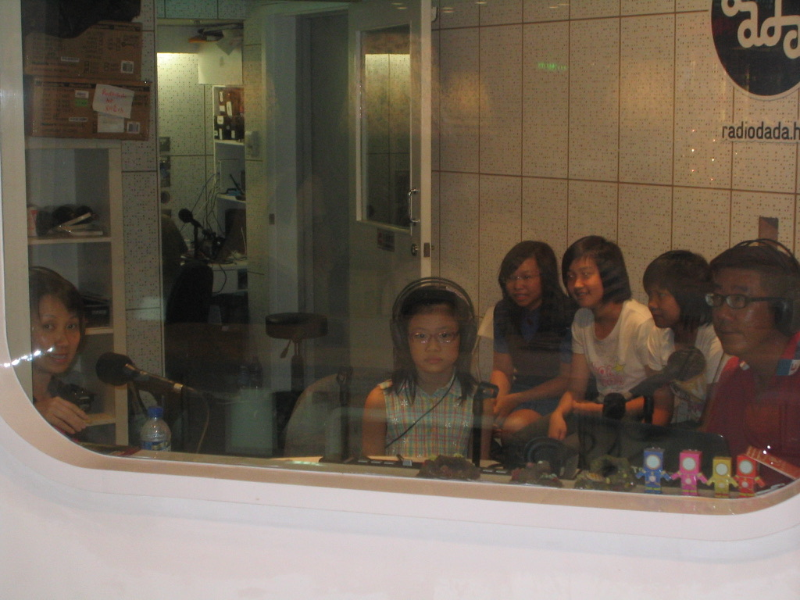

SPECIALS
All of the weird things I have done in my life...
I know the layout is ugly. fuck it. just focus on the content.
TV and radio appearances
- BBC Two World's Busiest Cities: Hong Kong , 2017 interview with my father and deceased uncle
But why did I wear a striped tee with a checked shirt?? This is the worst fashion disaster in history - Interview with radiodada.hk, Summer 2009. An interview on finswimming. The channel closed down so the recordings is not available online anymore :(
radiodada.hk is one of the first online radio channels in Hong Kong, which its name was derived from Dadaism. They are also known by their innovative graphic design done by Hong Kong designer Tommy Li.

News paper and magazine appearances
- Interview with Ming Pao（明報）, June 2009
- Photoshoot with Sudden Weekly（忽然一周）, Summer 2010
- Other media appearances as a human backdrop!
- Took a photo for a magazine article interviewing coach of the other team at the Old Victoria Park Swimming Pool. Oasis Parenting, June 2011.
- Photo taken on the same day with the photo on the left, an interview for the South China Morning Post, April 2011.
- I demonstrated how to wear a snorkel (with my mouth wide open!) and the importance of wearing a footpocket (sometimes we wear socks too) so our feets won't be rubbed by the fins, but the damage is done already, see the bandage on my feet! Oriental Daily, June2011.
- Now you recognize my injured feet. The Sun (under Oriental Daily), June 2011.
Interview text translated: "My bad diving gestures brought capillary bursts all over my chest. But now I got hang of it and received compliments from the coach."
I was nine at the time and that interview was on my first ever finswimming competition!
First ever photoshooting experience in my life, at the headquarters of the Next Digital Limited HQ.
R.I.P. Next Digital...
👇🏻Yet another interesting shot!
From left to right:

As a Hong Kong Finswimming Representative
All-China Youth Finswimming Competitions
- 女子少年丙組4×50米蹼泳接力第二名（2010）
(Second Place in Girls Level C 4×50m Finswimming Relay(2010)) - 女子少年乙組25米屏氣潛泳第一名（2012）
(Champion in Girls Level B 25m Apena(2012)) - 女子少年甲組4×100米蹼泳接力第一名（2012）
(Champion in Girls Level A 4×100m Finswimming Relay(2012)) - 女子少年乙組50米蹼泳第二名（2013）
(Second Place in Girls Level B 50m Finswimming(2013)) - 女子少年乙組100米蹼泳第三名（2013）
(Third Place in Girls Level B 100m Finswimming(2013)) - 女子少年甲組4×100米蹼泳接力第一名（2013）
(Champion in Girls Level A 4×100m Finswimming Relay(2013))
The 16th Hong Kong International Long Distance Finswimming Competition (November 25, 2012)
- Third Place in Girls 1500m Finswimming Trials
Fun fact: I was chosen in the lineup for the All-Japan competition in 2011, always take leave at school to trainings, our school principal announced my trip in front of the whole elementary school I was studying and said stuff about how proud she was.
Unfortunately a nuclear plant in Fukushima blew up ten days before the trip.
As a school representative...
Inter-School Swimming Competitions Division Three (Kowloon Two)
- Champion in Girls A Grade 4×50m Freestyle Relay (2013)
- Second in Girls A Grade 4×50m Freestyle Relay (2014)